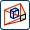

Cameras
Use cameras to store and recall viewing parameters.
You can:
-
Create a camera to save a set of visualization parameters. Visualization parameters include view orientation, zoom, and perspective. Shading settings are not stored in cameras.
-
Create multiple cameras. The cameras are attached to model views. You can activate only one camera per model view at a time.
-
Use the dynamic camera interface as an alternative way to define your current work view.
-
Store camera parameters used to create special effects and high quality images from different viewing positions and parameters.

|
|
Camera staging view with handles for manipulation of target and camera. |
|
|
Window showing the view as seen by the camera. |
|
Note |
You cannot use cameras on drawings. |
Where do I find it?
|
Toolbar |
Visualization→Capture and Edit Camera  |
|
Menu |
View→Camera |
|
Resource Bar |
Part Navigator→Cameras |